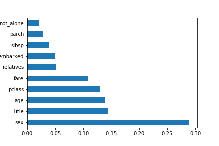

Exploring Survival on the Titanic

RMS Titanic was a British passenger liner operated by the White Star Line that sank in the North Atlantic Ocean in the early morning hours of 15 April 1912, after striking an iceberg during her maiden voyage from Southampton to New York City. Of the estimated 2,224 passengers and crew aboard, more than 1,500 died.
By examining factors such as class, sex, and age, in our dataset we will experiment with different machine learning algorithms and build a program that can predict whether a given passenger would have survived this disaster. To get sense of the variables, their class type, and the first few observations of each. We know we’re working with 891 observations of 12 variables. To make things a bit more explicit since a couple of the variable names aren’t 100% illuminating, here’s what we’ve got to deal with:
| Variable Name | Description |
|---|---|
| Survived | Survived (1) or died (0) |
| Pclass | Passenger's class |
| Name | Passenger's name |
| Sex | Passenger's sex |
| Age | Passenger's age |
| SibSp | Number of siblings/spouses aboard |
| Parch | Number of parents/children aboard |
| Ticket | Ticket number |
| Fare | Fare |
| Cabin | Cabin |
| Embarked | Port of embarkation |
Missing Values - Age,Cabin,Fare and Embarked are the columns for missing values. We will work on imputing missing field data

survived-perished

survived-by-gender

Feature Engineering Name - categorize passengers through the titles in the name to see is there is any relationship between name and survival
passengers-by-age
Feature Engineering Name - categorize passengers through the titles in the name to see is there is any relationship between name and survival
Feature Engineering Family Size -SibSp and Parch would make more sense as a combined feature, that shows the total number of relatives, a person has on the Titanic. We created a 'relative' column and also added a feature that shows if someone is not alone.

Relation b/w Survived and Passenger Class- Here we see clearly, that Pclass is contributing to a persons chance of survival, especially if this person is in class 1. We will create another pclass plot below.

Missing Value-Fare :The visualization shows that the fare would be somewhere greater than 7 and less than 10, this adds another filter to calculate mean. post appling all three filters we get the mean of 8.03. Which will be replaced by nan value in Mr.Storey's fare!

Missing Value-Embarkment :The median fare for a first class passenger departing from Charbourg (‘C’) coincides nicely with the $80 paid by our embarkment -deficient passengers. I think we can safely replace the NA values with ‘C’.
Best Features
Missing Value-Fare :The visualization shows that the fare would be somewhere greater than 7 and less than 10, this adds another filter to calculate mean. post appling all three filters we get the mean of 8.03. Which will be replaced by nan value in Mr.Storey's fare!